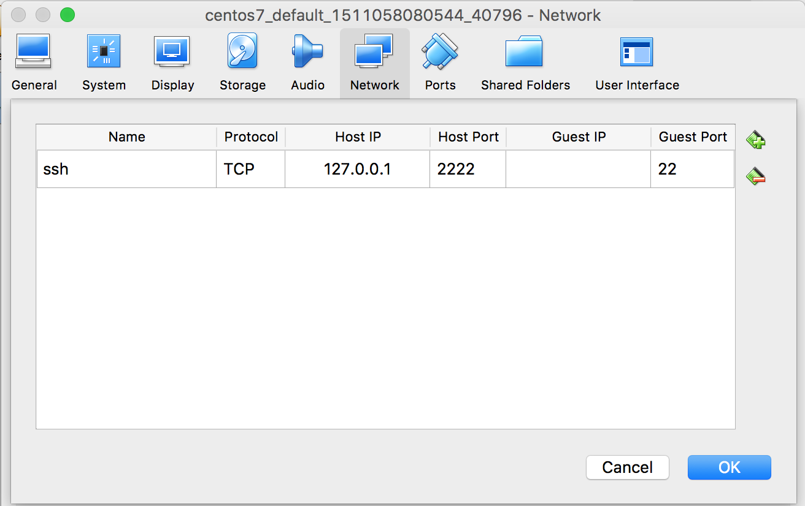
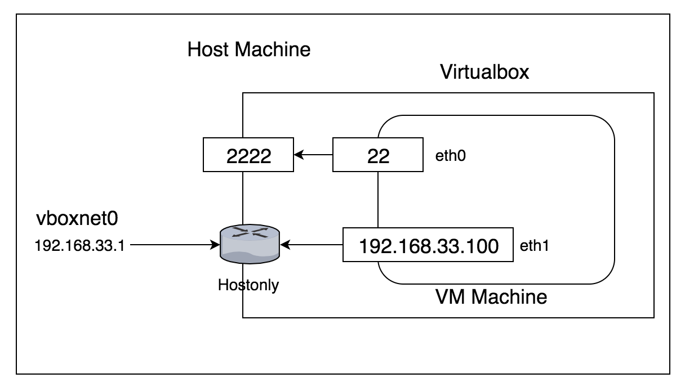
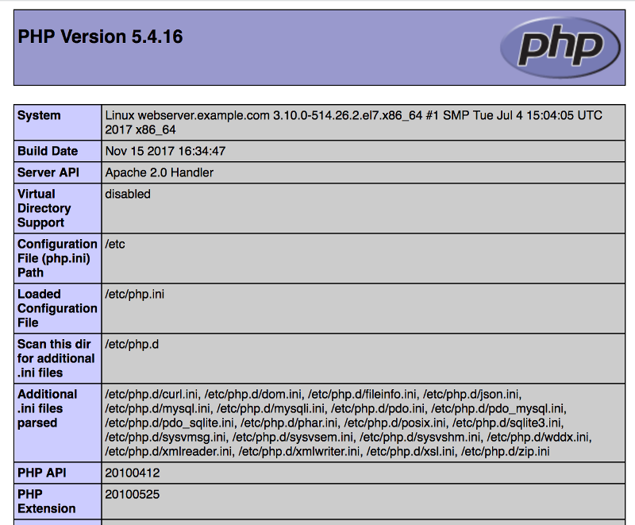

พื้นฐาน Linux System Admin
ในบทนี้เป็นการสรุปพื้นฐาน Linux System Admin ที่มีความจำเป็น ในการบริหารจัดการระบบ โดย ระบบปฎิบัติการ Linux จะควบคุมผ่านทาง Terminal เป็นส่วนมากทั้งการปรับแต่งค่าต่างๆ และการติดตั้ง Software เพิ่มเติมผ่านทาง Repository โปรแกรมที่คอยทำหน้าที่สื่อสารระหว่างผู้ใช้งานและ ระบบปฎิบัติการ Linux เรียกว่า shell (centos 7 เรียกว่า Bash shell) ทำให้เราสามารถพิมพิ์คำสั่งต่างๆ ได้ และ อีกอย่างหนึ่งที่ ผู้ใช้งานความเรียนรู้ในการใช้งานคือ ssh โดยปรกติ Linux ให้บริการการเชื่อมต่อผ่านทางโปรโตคอล ssh โดยมี Service ทำงานอยู่ที่ port 22
เริ่มต้นที่ SHELL
เนื่องจากเราใช้ vagrant ในการทดสอบ vagrant ทำการ map hostport (2222) ไปยัง Guestport (22) ที่ NAT interfaceใน File Vagrant เพิ่ม interface อีก 1 interface ทำหน้าที่เป็น Host Only
config.vm.network "private_network", ip: "192.168.33.100"
Vagrant Network ดังรูป จะพบว่า VM จะสร้าง 2 interface eth0, eth1การเข้าใช้ vm สามารถเข้าใช้ได้ 3 วิธี (username: vagrant , password: vagrant)
$ vagrant ssh
$ ssh vagrant@127.0.0.1 -p 2222
vagrant@127.0.0.1's password:
$ ssh vagrant@192.168.33.100
vagrant@192.168.33.100's password:
เมื่อเชื่อมต่อแล้ว จะแสดง shell prompt แสดงเพื่อรอรับคำสั่ง
[vagrant@localhost ~]$
[vagrant@localhost ~]$ echo $HOME
/home/vagrant
[vagrant@localhost ~]$ sudo su -
[root@localhost ~]#
[root@localhost ~]# echo $HOME
/root
พื้นฐานการใช้ terminal
- " tilde ~" เป็น shortcut ของ Home directory
- "hash #" บ่งบอกว่าตอนนี้เรากำลังทำงานกับ root user
- "Dollar sign $" บ่งบอกว่าตอนนี้เรากำลังทำงานกับ user ที่ไม่ใช่ root
- ให้ Enter ทุกครั้งที่พิมพ์คำสั่งเรียบร้อยแล้ว
- สามารถใช้ Up/ Down Arrow ดูคำสั่งย้อนหลัง
- คำสั่ง pwd (print working directory) ดู current directory
- เปลี่ยน directory ด้วย คำสั่ง cd
- list directory ls -ahl
/root directory และ " / " เรียกว่า root ไม่ใช่สิ่งเดียวกัน /root คือ Home directory ของ user root ส่วน "/" top-level directory ของ Linux file system
[root@localhost ~]# cd /
[root@localhost /]# ls -ahl
total 16K
dr-xr-xr-x. 18 root root 239 Nov 19 02:22 .
dr-xr-xr-x. 18 root root 239 Nov 19 02:22 ..
lrwxrwxrwx. 1 root root 7 Aug 23 00:08 bin -> usr/bin
dr-xr-xr-x. 4 root root 4.0K Aug 23 00:18 boot
drwxr-xr-x. 18 root root 3.1K Nov 19 02:22 dev
drwxr-xr-x. 79 root root 8.0K Nov 19 02:22 etc
drwxr-xr-x. 3 root root 21 Aug 23 00:12 home
lrwxrwxrwx. 1 root root 7 Aug 23 00:08 lib -> usr/lib
lrwxrwxrwx. 1 root root 9 Aug 23 00:08 lib64 -> usr/lib64
drwxr-xr-x. 2 root root 6 Nov 5 2016 media
drwxr-xr-x. 2 root root 6 Nov 5 2016 mnt
drwxr-xr-x. 3 root root 39 Aug 23 00:16 opt
dr-xr-xr-x. 121 root root 0 Nov 19 02:22 proc
dr-xr-x---. 2 root root 158 Nov 19 03:24 root
drwxr-xr-x. 23 root root 780 Nov 19 02:22 run
lrwxrwxrwx. 1 root root 8 Aug 23 00:08 sbin -> usr/sbin
drwxr-xr-x. 2 root root 6 Nov 5 2016 srv
dr-xr-xr-x. 13 root root 0 Nov 19 02:22 sys
drwxrwxrwt. 7 root root 93 Nov 19 02:23 tmp
drwxr-xr-x. 13 root root 155 Aug 23 00:08 usr
drwxr-xr-x. 1 vagrant vagrant 256 Nov 19 02:41 vagrant
drwxr-xr-x. 19 root root 267 Nov 19 02:22 var
[root@localhost /]# cd /var
[root@localhost var]# ls -ahl
total 12K
drwxr-xr-x. 19 root root 267 Nov 19 02:22 .
dr-xr-xr-x. 18 root root 239 Nov 19 02:22 ..
drwxr-xr-x. 2 root root 6 Nov 5 2016 adm
drwxr-xr-x. 5 root root 44 Aug 23 00:10 cache
drwxr-xr-x. 2 root root 6 Nov 7 2016 crash
drwxr-xr-x. 3 root root 34 Aug 23 00:13 db
drwxr-xr-x. 3 root root 18 Aug 23 00:10 empty
drwxr-xr-x. 2 root root 6 Nov 5 2016 games
drwxr-xr-x. 2 root root 6 Nov 5 2016 gopher
drwxr-xr-x. 3 root root 18 Dec 6 2016 kerberos
drwxr-xr-x. 31 root root 4.0K Nov 19 02:22 lib
drwxr-xr-x. 2 root root 6 Nov 5 2016 local
lrwxrwxrwx. 1 root root 11 Aug 23 00:08 lock -> ../run/lock
drwxr-xr-x. 8 root root 4.0K Nov 19 02:22 log
lrwxrwxrwx. 1 root root 10 Aug 23 00:08 mail -> spool/mail
drwxr-xr-x. 2 root root 6 Nov 5 2016 nis
drwxr-xr-x. 2 root root 6 Nov 5 2016 opt
drwxr-xr-x. 2 root root 6 Nov 5 2016 preserve
lrwxrwxrwx. 1 root root 6 Aug 23 00:08 run -> ../run
drwxr-xr-x. 8 root root 87 Aug 23 00:10 spool
drwxrwxrwt. 2 root root 6 Nov 19 02:23 tmp
-rw-r--r--. 1 root root 163 Aug 23 00:08 .updated
drwxr-xr-x. 2 root root 6 Nov 5 2016 yp
การใช้งาน "." single period ".." double period
[root@localhost var]# cd ..
[root@localhost /]# cd lib
[root@localhost lib]# ls -ahl
total 32K
dr-xr-xr-x. 27 root root 4.0K Aug 23 00:17 .
drwxr-xr-x. 13 root root 155 Aug 23 00:08 ..
drwxr-xr-x. 2 root root 6 May 25 21:22 binfmt.d
drwxr-xr-x. 3 root root 64 Nov 5 2016 debug
drwxr-xr-x. 4 root root 236 Aug 23 00:14 dracut
drwxr-xr-x. 7 root root 83 May 25 20:21 firewalld
drwxr-xr-x. 66 root root 8.0K Aug 23 00:10 firmware
dr-xr-xr-x. 2 root root 6 Nov 5 2016 games
drwxr-xr-x. 3 root root 21 Aug 23 00:09 grub
drwxr-xr-x. 6 root root 76 Aug 23 00:09 kbd
drwxr-xr-x. 2 root root 56 Aug 23 00:09 kdump
drwxr-xr-x. 3 root root 23 May 25 21:22 kernel
drwxr-xr-x. 2 root root 55 Aug 23 00:13 locale
drwxr-xr-x. 2 root root 89 Aug 23 00:14 modprobe.d
drwxr-xr-x. 4 root root 69 Aug 23 00:14 modules
drwxr-xr-x. 2 root root 6 May 25 21:22 modules-load.d
drwxr-xr-x. 4 root root 31 May 25 16:27 NetworkManager
drwxr-xr-x. 2 root root 50 Aug 23 00:14 polkit-1
drwxr-xr-x. 3 root root 27 Aug 23 00:09 python2.7
drwxr-xr-x. 4 root root 4.0K Mar 27 2017 rpm
lrwxrwxrwx. 1 root root 30 Aug 23 00:10 sendmail -> /etc/alternatives/mta-sendmail
lrwxrwxrwx. 1 root root 24 Aug 23 00:10 sendmail.postfix -> ../sbin/sendmail.postfix
dr-xr-xr-x. 2 root root 6 Nov 5 2016 sse2
drwxr-xr-x. 2 root root 51 Aug 23 00:14 sysctl.d
drwxr-xr-x. 13 root root 4.0K Aug 23 00:14 systemd
drwxr-xr-x. 2 root root 4.0K Aug 23 00:14 tmpfiles.d
drwxr-xr-x. 11 root root 240 Aug 23 00:14 tuned
drwxr-xr-x. 4 root root 190 Aug 23 00:14 udev
lrwxrwxrwx. 1 root root 53 Aug 23 00:16 VBoxGuestAdditions -> /opt/VBoxGuestAdditions-5.1.26/lib/VBoxGuestAdditions
drwxr-xr-x. 2 root root 80 Nov 15 2016 yum-plugins
การติดตั้ง Software ด้วย yum
สำหรับระบบปฎิบัติการ Linux CentOS จะมีความสามารถในการติดตั้ง โปรแกรมต่างๆ ด้วยคำสั่ง yum โดยจะทำการติดตั้งจาก Repository online ที่ได้ระบุไว้แล้ว ใน /etc/yum.repos.d
[root@localhost lib]# cd /etc/yum.repos.d/
[root@localhost yum.repos.d]# ls -l
total 28
-rw-r--r--. 1 root root 1664 Nov 29 2016 CentOS-Base.repo
-rw-r--r--. 1 root root 1309 Nov 29 2016 CentOS-CR.repo
-rw-r--r--. 1 root root 649 Nov 29 2016 CentOS-Debuginfo.repo
-rw-r--r--. 1 root root 314 Nov 29 2016 CentOS-fasttrack.repo
-rw-r--r--. 1 root root 630 Nov 29 2016 CentOS-Media.repo
-rw-r--r--. 1 root root 1331 Nov 29 2016 CentOS-Sources.repo
-rw-r--r--. 1 root root 2893 Nov 29 2016 CentOS-Vault.repo
คำสั่ง yum repolist
[root@localhost yum.repos.d]# yum repolist
Loaded plugins: fastestmirror
base | 3.6 kB 00:00:00
extras | 3.4 kB 00:00:00
updates | 3.4 kB 00:00:00
(1/4): extras/7/x86_64/primary_db | 130 kB 00:00:00
(2/4): base/7/x86_64/group_gz | 156 kB 00:00:00
(3/4): updates/7/x86_64/primary_db | 3.6 MB 00:00:00
(4/4): base/7/x86_64/primary_db | 5.7 MB 00:00:01
Determining fastest mirrors
* base: mirror.thaidns.co.th
* extras: mirror.thaidns.co.th
* updates: mirror.thaidns.co.th
repo id repo name status
base/7/x86_64 CentOS-7 - Base 9,591
extras/7/x86_64 CentOS-7 - Extras 282
updates/7/x86_64 CentOS-7 - Updates 1,086
repolist: 10,959
การใช้งาน yum
$ sudo yum update
# yum update
$ sudo yum install software
# yum install software
$ sudo systemctl start software
# systemctl start software
$ sudo yum remove software
# yum remove software
เรียนรู้ทดสอบการติดตั้ง LAMP บน Centos 7
LAMP ย่อมาจาก Linux, Apache, Mysql, PHP เป็นชุดของ software พื้นฐานสำหรับการใช้งาน web content
1 ตั้งค่า hostname เริ่มต้นด้วยการ ตั้งค่า hostname ด้วยการใช้คำสั่ง hostnamectl set-hostname
# hostname
localhost.localdomain
# hostnamectl set-hostname webserver.example.com
# hostname
webserver.example.com
2 เพิ่มเติม hostname ใน /etc/hosts
# vi /etc/hosts
127.0.0.1 localhost localhost.localdomain localhost4 localhost4.localdomain4
::1 localhost localhost.localdomain localhost6 localhost6.localdomain6
192.168.33.100 webserver.example.com webserver
3 ทดสอบการ ping webserver.example.com และ webserver
# ping webserver.example.com
PING webserver.example.com (192.168.33.100) 56(84) bytes of data.
64 bytes from webserver.example.com (192.168.33.100): icmp_seq=1 ttl=64 time=0.017 ms
64 bytes from webserver.example.com (192.168.33.100): icmp_seq=2 ttl=64 time=0.036 ms
# ping webserver
PING webserver.example.com (192.168.33.100) 56(84) bytes of data.
64 bytes from webserver.example.com (192.168.33.100): icmp_seq=1 ttl=64 time=0.015 ms
64 bytes from webserver.example.com (192.168.33.100): icmp_seq=2 ttl=64 time=0.038 ms
4 ติดตั้ง apache
# yum install httpd
Loaded plugins: fastestmirror
Loading mirror speeds from cached hostfile
* base: mirror.thaidns.co.th
* extras: mirror.thaidns.co.th
* updates: mirror.thaidns.co.th
Resolving Dependencies
--> Running transaction check
---> Package httpd.x86_64 0:2.4.6-67.el7.centos.6 will be installed
--> Processing Dependency: httpd-tools = 2.4.6-67.el7.centos.6 for package: httpd-2.4.6-67.el7.centos.6.x86_64
--> Processing Dependency: /etc/mime.types for package: httpd-2.4.6-67.el7.centos.6.x86_64
--> Processing Dependency: libaprutil-1.so.0()(64bit) for package: httpd-2.4.6-67.el7.centos.6.x86_64
--> Processing Dependency: libapr-1.so.0()(64bit) for package: httpd-2.4.6-67.el7.centos.6.x86_64
--> Running transaction check
---> Package apr.x86_64 0:1.4.8-3.el7 will be installed
---> Package apr-util.x86_64 0:1.5.2-6.el7 will be installed
---> Package httpd-tools.x86_64 0:2.4.6-67.el7.centos.6 will be installed
---> Package mailcap.noarch 0:2.1.41-2.el7 will be installed
--> Finished Dependency Resolution
Dependencies Resolved
======================================================================================================================
Package Arch Version Repository Size
======================================================================================================================
Installing:
httpd x86_64 2.4.6-67.el7.centos.6 updates 2.7 M
Installing for dependencies:
apr x86_64 1.4.8-3.el7 base 103 k
apr-util x86_64 1.5.2-6.el7 base 92 k
httpd-tools x86_64 2.4.6-67.el7.centos.6 updates 88 k
mailcap noarch 2.1.41-2.el7 base 31 k
Transaction Summary
======================================================================================================================
Install 1 Package (+4 Dependent packages)
Total download size: 3.0 M
Installed size: 10 M
Is this ok [y/d/N]: y
5 start webserver
$ sudo systemctl start httpd.service
$ sudo systemctl enable httpd.service
เปิด browser ไปยัง 192.168.33.100
6 แก้ไข httpd.conf (advance config)
# cp /etc/httpd/conf/httpd.conf ~/httpd.conf.backup
# vi /etc/httpd/conf/httpd.conf
7 ติดตั้ง ฐานข้อมูล mariadb
# yum install mariadb mariadb-server -y
8 start service ของ mariadb
# systemctl start mariadb
# systemctl enable mariadb
# mysql -u root
Welcome to the MariaDB monitor. Commands end with ; or \g.
Your MariaDB connection id is 2
Server version: 5.5.56-MariaDB MariaDB Server
Copyright (c) 2000, 2017, Oracle, MariaDB Corporation Ab and others.
Type 'help;' or '\h' for help. Type '\c' to clear the current input statement.
MariaDB [(none)]>
MariaDB [(none)]> \q
Bye
9 รัน mysql_secure_installation
# mysql_secure_installation
NOTE: RUNNING ALL PARTS OF THIS SCRIPT IS RECOMMENDED FOR ALL MariaDB
SERVERS IN PRODUCTION USE! PLEASE READ EACH STEP CAREFULLY!
In order to log into MariaDB to secure it, we'll need the current
password for the root user. If you've just installed MariaDB, and
you haven't set the root password yet, the password will be blank,
so you should just press enter here.
Enter current password for root (enter for none):
OK, successfully used password, moving on...
Setting the root password ensures that nobody can log into the MariaDB
root user without the proper authorisation.
Set root password? [Y/n] y
New password: #พิมพ์ password
Re-enter new password: #พิมพ์ password
Password updated successfully!
Reloading privilege tables..
... Success!
By default, a MariaDB installation has an anonymous user, allowing anyone
to log into MariaDB without having to have a user account created for
them. This is intended only for testing, and to make the installation
go a bit smoother. You should remove them before moving into a
production environment.
Remove anonymous users? [Y/n] y
... Success!
Normally, root should only be allowed to connect from 'localhost'. This
ensures that someone cannot guess at the root password from the network.
Disallow root login remotely? [Y/n] y
... Success!
By default, MariaDB comes with a database named 'test' that anyone can
access. This is also intended only for testing, and should be removed
before moving into a production environment.
Remove test database and access to it? [Y/n] y
- Dropping test database...
... Success!
- Removing privileges on test database...
... Success!
Reloading the privilege tables will ensure that all changes made so far
will take effect immediately.
Reload privilege tables now? [Y/n] y
... Success!
Cleaning up...
All done! If you've completed all of the above steps, your MariaDB
installation should now be secure.
Thanks for using MariaDB!
restart service
# systemctl restart mariadb
# mysql -u root -p
Enter password:
Welcome to the MariaDB monitor. Commands end with ; or \g.
Your MariaDB connection id is 2
Server version: 5.5.56-MariaDB MariaDB Server
Copyright (c) 2000, 2017, Oracle, MariaDB Corporation Ab and others.
Type 'help;' or '\h' for help. Type '\c' to clear the current input statement.
MariaDB [(none)]>
ทดสอบการสร้าง ฐานข้อมูล
MariaDB [(none)]> create database webdata;
Query OK, 1 row affected (0.00 sec)
MariaDB [(none)]> grant all on webdata.* to 'webuser' identified by 'password';
Query OK, 0 rows affected (0.00 sec)
MariaDB [(none)]> flush privileges;
MariaDB [(none)]> \q
ติดตั้ง php
# yum install php php-pear php-mysql -y
edit /etc/php.ini โดยเพิ่ม options ไว้ท้าย file
# vi /etc/php.ini
error_reporting = E_COMPILE_ERROR|E_RECOVERABLE_ERROR|E_ERROR|E_CORE_ERROR
error_log = /var/log/php/error.log
max_input_time = 30
# mkdir /var/log/php
# chown -R apache:apache /var/log/php
สร้าง ไฟล์ /var/www/html/info.php
# vi /var/www/html/info.php
<?php
phpinfo();
?>
สร้าง ไฟล์ /var/www/html/index.html
<h1> index.html </h1>
#chown -R apache:apache /var/www/html/
restart apache
# systemctl reload httpd
เปิด browser http://192.168.33.100/info.php

ตั้งค่า Name-Based Virtual Hosts
vi /etc/httpd/conf.d/webserver-vhost.conf
<VirtualHost *:80>
ServerAdmin webmaster@example.com
ServerName webserver.example.com
ServerAlias webserver.example.com
DocumentRoot /var/www/html/webserver.example.com/public_html/
ErrorLog /var/www/html/webserver.example.com/logs/error.log
CustomLog /var/www/html/webserver.example.com/logs/access.log combined
</VirtualHost>
# mkdir -p /var/www/html/webserver.example.com/public_html
# mkdir -p /var/www/html/webserver.example.com/logs
Restart Service
# systemctl restart httpd
Job for httpd.service failed because the control process exited with error code. See "systemctl status httpd.service"
and "journalctl -xe" for details.
by default มีการเปิดการใช้งาน selinux ทำให้มีการไม่อนุญาติ ให้มีการ Start apache
# sestatus
SELinux status: enabled
SELinuxfs mount: /sys/fs/selinux
SELinux root directory: /etc/selinux
Loaded policy name: targeted
Current mode: enforcing
Mode from config file: permissive
Policy MLS status: enabled
Policy deny_unknown status: allowed
Max kernel policy version: 28
tail -f /var/log/audit/audit.log เพื่อดู log ที่เกิดจาก selinux
#tail -f /var/log/audit/audit.log
type=AVC msg=audit(1511078706.318:988): avc: denied { write } for pid=8729 comm="httpd" name="logs" dev="dm-0"
ino=67157306 scontext=system_u:system_r:httpd_t:s0 tcontext=unconfined_u:object_r:httpd_sys_content_t:s0 tclass=dir
ปรับ selinux policy
# touch /var/www/html/webserver.example.com/logs/error.log
// Owner ship
# chown -R apache:apache /var/www/html/webserver.example.com
// SELinux serve files off Apache, resursive
# chcon -t httpd_sys_content_t /var/www/html/webserver.example.com -R
# semanage fcontext -a -t httpd_sys_content_t "/var/www/html/webserver.example.com(/.*)?"
//Allow write only to specific dirs
# chcon -t httpd_sys_rw_content_t /var/www/html/webserver.example.com/logs -R
# semanage fcontext -a -t httpd_sys_rw_content_t /var/www/html/webserver.example.com/logs
httpd_sys_content_t– for allowing Apache to serve these contents andhttpd_sys_rw_content_t– for allowing Apache to write to those path.
คำสั่ง semanage เป็นการสร้าง selinux policy และใช้คำสั่ง restorecon -Rv
semanage fcontext -a -t httpd_sys_rw_content_t /var/www/html/webserver.example.com/logs
semanage fcontext -a -t httpd_sys_content_t "/var/www/html/webserver.example.com(/.*)?"
# semanage fcontext -l | grep webserver
/var/www/html/webserver.example.com(/.*)? all files system_u:object_r:httpd_sys_content_t:s0
/var/www/html/webserver.example.com/logs all files system_u:object_r:httpd_sys_rw_content_t:s0
# restorecon -Rv /var/www/html/webserver.example.com
เพิ่ม content
vi /var/www/html/webserver.example.com/public_html/index.html
<h1>webserver.example.com</h1>
vi /var/www/html/webserver.example.com/public_html/info.php
เปิดการใช้งาน firewall
# firewall-cmd --permanent --add-port=80/tcp
# firewall-cmd --permanent --add-port=443/tcp
# firewall-cmd --reload